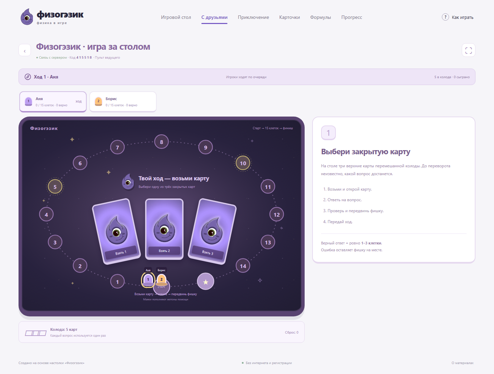

Знакомая настолка♧Лёгкая
Веб-настолка
Быстрый старт. Любое устройство.Поле, закрытая колода, переворот карт и точные шаги. Играй один, за одним экраном с друзьями или подключай телефоны к общему столу.
- 45 карт и справочник формул
- Приключение, опыт и задания дня
- Режим ведущего и комнаты по коду